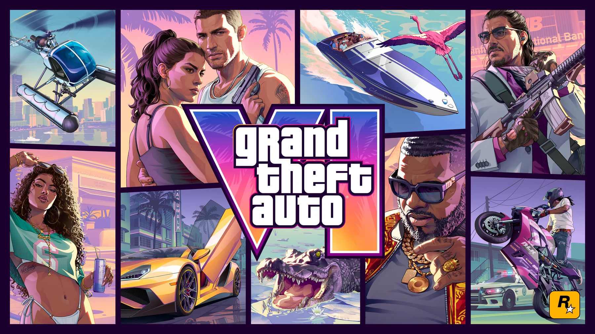

Estado de PC hoy
Rockstar no ha publicado un anuncio oficial de lanzamiento para PC en la página de GTA VI consultada al actualizar este artículo. Por tanto, no hay una fecha de PC que podamos recomendar como cierta. Esta frase describe el estado de la fuente en una fecha concreta y debe revisarse cuando Rockstar publique novedades. Un cambio de tienda, un arte filtrado o una referencia indirecta no bastan para considerar oficial una edición.
Por qué las comparaciones históricas no dan una fecha
Otras entregas de la saga llegaron a PC después de consolas, lo que invita a imaginar un intervalo parecido. Ese historial sirve para formular una hipótesis, no para fijar un calendario nuevo: cada desarrollo tiene prioridades, contrato y decisiones técnicas distintas. Publicar “llega en tal mes” sin fuente crea expectativas y confunde búsquedas. Si citamos una previsión de terceros, debe quedar atribuida, fechada y señalada como opinión.

Cómo comprobar un anuncio auténtico
Busca el comunicado en Rockstar Newswire, la página oficial de GTA VI o una ficha de producto publicada por un distribuidor autorizado. Comprueba que la noticia enlaza a la fuente original y distingue entre “se rumorea”, “se espera” y “está anunciado”. Las páginas de hardware y requisitos también importan una vez exista una versión: antes de ellas, las tablas de requisitos que circulan en foros son especulación, incluso si parecen detalladas.
Qué puede hacer quien espera en PC
Evita comprar cuentas, claves de procedencia dudosa o supuestas herramientas de desbloqueo. Mantén tu plataforma y controladores actualizados y revisa la política de devoluciones de cualquier tienda antes de comprometer dinero. Si prefieres jugar antes en consola, comprueba qué edición necesitas y si los progresos o compras se pueden trasladar; no des por supuesto que se compartirán entre sistemas.
Cuándo se actualizará esta guía
Actualizaremos este artículo cuando Rockstar confirme una edición de PC, una fecha o especificaciones. Anotamos la fecha de revisión para que la respuesta tenga contexto temporal. Los lectores pueden avisar de un comunicado nuevo mediante contacto, con enlace directo a la fuente. La cobertura no adivinará el calendario para rellenar una noticia: publicar “sin fecha anunciada” es más exacto y útil mientras no haya un anuncio.
Qué significará un anuncio de PC útil
Una confirmación completa debería indicar fecha, tiendas compatibles, requisitos mínimos o recomendados y prestaciones específicas de ordenador. Cuando se publique, revisaremos si hay soporte para resoluciones ultrapanorámicas, escalado, ajustes gráficos, mando y guardado entre plataformas. No basta con que una página de tienda cree una ficha genérica: espera una comunicación del editor y documentación detallada. La diferencia importa para presupuestar una actualización de hardware y saber qué experiencia puede ofrecer tu equipo.
Evita archivos y accesos sospechosos
Los anuncios de una versión de PC suelen atraer supuestos instaladores, cracks y “accesos anticipados”. No descargues ejecutables de páginas desconocidas ni introduzcas credenciales de Rockstar o una tienda en un sitio externo. Las claves vendidas sin autorización pueden ser revocadas y exponer tus datos. Utiliza únicamente el launcher o tiendas que el editor confirme cuando llegue el momento, y protege tu cuenta con autenticación multifactor.
Preparar el ordenador sin comprar de más
Hasta que existan requisitos oficiales, no conviene comprar componentes basándose en una cifra filtrada. Mantén espacio disponible, comprueba el estado de tu SSD y actualiza el sistema con normalidad; no es necesario preordenar piezas. Después compara benchmarks de la versión final a la resolución que realmente uses. Un resultado de una máquina de gama alta no predice el rendimiento de un portátil, así que busca pruebas cercanas a tu configuración.
Un anuncio no equivale a requisitos óptimos
Cuando finalmente se publiquen requisitos, distingue entre mínimos para iniciar el juego, recomendados para una experiencia concreta y pruebas independientes para una tasa de imagen objetivo. La resolución, trazado de rayos y escalado pueden cambiar el resultado de manera sustancial. Espera análisis de la versión comercial y busca datos por ajuste, no una sola cifra de FPS. También comprueba si el sistema operativo, almacenamiento y controlador cumplen la ficha. Un ordenador dentro de los mínimos quizá necesite compromisos gráficos; un equipo por encima de lo recomendado no garantiza rendimiento perfecto en cada zona. La información específica permite decidir si actualizar una pieza o esperar a que optimicen el software.
En resumen
Por ahora, no hay anuncio oficial de una versión nativa de PC en las fuentes de Rockstar consultadas. Guarda esta página para una respuesta con fecha de actualización y desconfía de fechas que no enlacen a un comunicado primario.
Preguntas frecuentes
¿GTA VI ya está disponible para PC?
La información oficial consultada al 22 de noviembre de 2026 solo anuncia PS5 y Xbox Series X|S.
¿Cuándo podría llegar a PC?
Rockstar no ha anunciado una fecha. Cualquier ventana publicada sin comunicado oficial es una estimación.
¿Sirven los requisitos de PC filtrados?
No son oficiales. Espera una ficha del editor o de una tienda autorizada.
¿Esta página se actualizará?
Sí, cuando exista una fuente primaria que cambie el estado anunciado.
Fuentes y lecturas
Consulta la fuente original cuando exista y su fecha; los anuncios, el catálogo y las guías de terceros pueden cambiar.